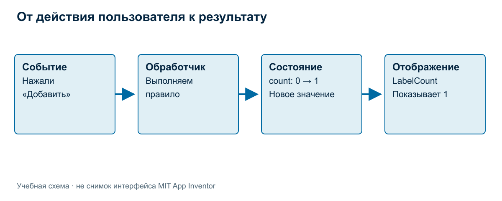
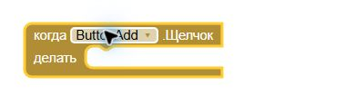
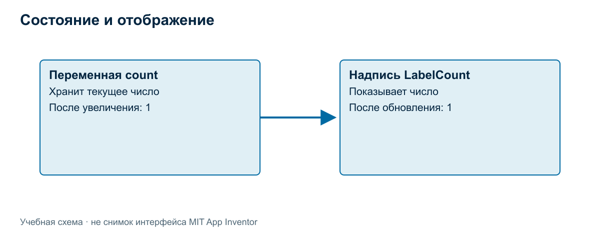
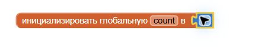
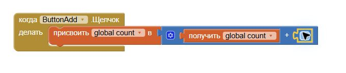
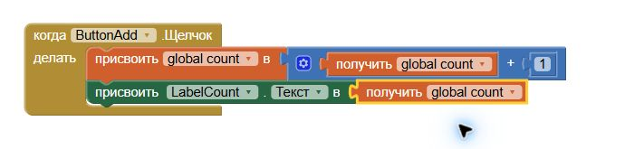
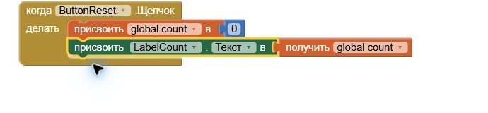
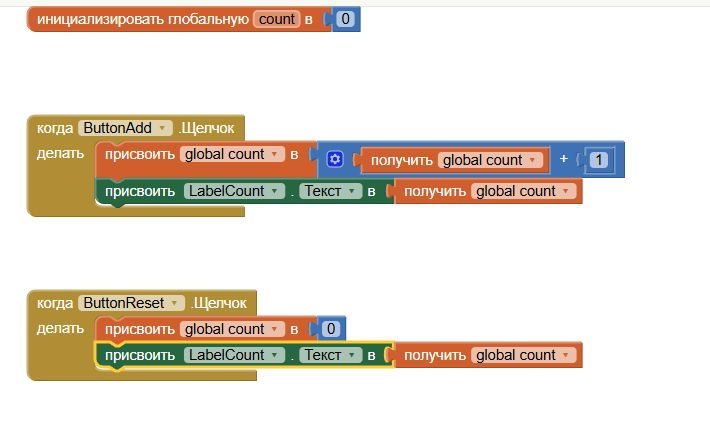
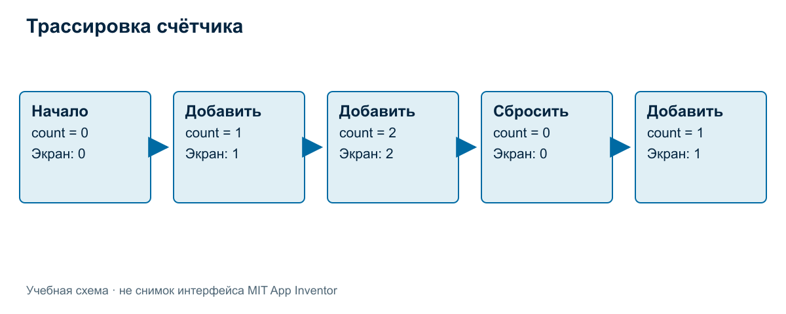

Событие, переменная и изменение состояния
Главная мысль: событие запускает действие программы, переменная хранит текущее значение, а экран показывает результат.
Экран уже есть: что заставляет его работать?
В предыдущей теме появилась надпись 0 и две кнопки. Пользователь видит возможные действия, но расположение компонентов само по себе не описывает их поведение. Чтобы число менялось, программе нужно правило: когда запускать действие, какие данные использовать и что показать после выполнения.

В этой цепочке четыре разных роли. Событие сообщает о произошедшем действии. Обработчик выполняет связанные с ним команды. Состояние хранит актуальные данные. Отображение делает эти данные видимыми пользователю. Если пропустить одну часть, приложение может выглядеть готовым, но вести себя неправильно.
Событие и обработчик
Для нашего примера событие — нажатие кнопки. Обработчик — правило, выполняемое при этом событии. Его можно прочитать словами: «Когда нажали “Добавить”, увеличить число и обновить надпись».
Определение обработчика не означает, что команды уже выполнились. Правило ждёт соответствующего события. При двух нажатиях оно выполняется дважды, каждый раз используя текущее значение.
Добавляем событие в App Inventor
Откройте «Блоки» кнопкой в правом верхнем углу редактора. Слева выберите ButtonAdd. Перетащите шаблон «когда ButtonAdd.Щелчок — делать» из открывшегося набора в свободную рабочую область.

Рисунок 1. Обработчик уже добавлен в программу, но его область «делать» пока пуста. Нажатие ещё не содержит команд увеличения.
Переменная и начальное состояние
Переменная связывает имя с текущим значением. В примере имя — count, начальное значение — 0. Имя помогает программе и человеку обращаться к данным; само значение может изменяться.
Состояние счётчика сейчас описывается одним числом. После двух увеличений оно равно 2; после сброса — 0. Состояние более сложного приложения может включать несколько значений, но для первой модели этого не требуется.
Начальное состояние задаётся до обработки нажатий. В нашей учебной модели при новом запуске устанавливается 0. Это выбранное правило примера; долговременное сохранение пока не реализуется. Нельзя обещать восстановление прошлого числа только потому, что оно хранилось в переменной во время работы.

Надпись LabelCount показывает значение, а count хранит его. Пока надпись правильно обновляется, они согласованы. Но программа может изменить переменную и забыть обновить экран — тогда пользователь увидит старое число.
Создаём глобальную переменную
В категории «Переменные» возьмите блок «инициализировать глобальную … в». Разместите его отдельно от обработчиков. Измените имя на count. В категории «Математика» возьмите числовой блок, задайте 0 и вставьте в гнездо начального значения.

Рисунок 2. Имя count и число 0 относятся к одному объявлению. Блок не нужно вставлять внутрь каждого нажатия: иначе возникнет риск сбрасывать состояние вместо его последовательного изменения.
Вычисление и присваивание
Для объяснения используем псевдокод, а не синтаксис конкретного языка:
count ← count + 1
Стрелка означает «записать новое значение». Сначала читается текущее значение справа, затем вычисляется сумма, после этого результат записывается в count. При исходном 0 получаем 1; при исходном 1 получаем 2.
Это не математическое равенство. Запись не утверждает, что число равно самому себе плюс единица. Она описывает изменение данных во времени. Именно поэтому важно проговаривать действие: «взять старое значение, прибавить единицу, сохранить новое».
В существующей вводной записи использовалось count = 0. Здесь специально применяем стрелку, чтобы не смешивать учебное присваивание с проверкой равенства или обозначениями разных языков.
Два обработчика счётчика
В начале работы:
count ← 0
текст LabelCount ← count
Когда нажали ButtonAdd:
count ← count + 1
текст LabelCount ← count
Когда нажали ButtonReset:
count ← 0
текст LabelCount ← count
Это смысловая модель для объяснения на доске. Она не является готовым текстом для вставки в Blocks Editor. В конструкторе те же роли будут представлены блоками.
Оба обработчика заканчиваются обновлением надписи. Увеличение зависит от прежнего значения; сброс устанавливает 0 независимо от того, сколько было раньше. Поэтому два сброса подряд не должны увеличивать число или давать отрицательное значение.
Разобранный пример. В начале count равно 0. «Добавить» записывает 1 и показывает 1. Второе «Добавить» записывает 2 и показывает 2. «Сбросить» записывает 0 и показывает 0. Следующее «Добавить» снова использует 0 и получает 1.
Собираем команды увеличения
В «Переменных» возьмите блок «присвоить … в» и вставьте в область «делать» обработчика ButtonAdd.Щелчок. В выпадающем списке переменной выберите global count.
В «Математике» возьмите блок сложения + и подключите его к значению присваивания. В первый аргумент вставьте блок «получить» из «Переменных» и выберите global count. Во второй аргумент вставьте числовой блок со значением 1.

Рисунок 3. Событие уже изменяет состояние. Обновления текста надписи в этой промежуточной цепочке ещё нет.
Теперь откройте набор блоков LabelCount. Возьмите команду присваивания свойства, в выпадающем списке свойства выберите «Текст». Поставьте эту команду ниже изменения count в том же обработчике. В гнездо значения вставьте «получить global count».

Рисунок 4. Сначала вычисляется и записывается новое число. Следующая команда берёт уже обновлённый count и передаёт его в LabelCount.Текст.
На промежуточных этапах редактор может показывать предупреждения об отсутствующем аргументе или ошибку, если переменная ещё не выбрана. Закончите соединение и проверьте индикаторы. Отсутствие предупреждений само по себе не доказывает правильность поведения.
Собираем команды сброса
Выберите ButtonReset слева и добавьте отдельный обработчик «когда ButtonReset.Щелчок — делать». Вставьте «присвоить global count в» с числом 0, затем «присвоить LabelCount.Текст в» со значением «получить global count».
Последнюю команду можно собрать заново или скопировать из обработчика увеличения: нажмите на зелёный блок правой кнопкой, выберите «Создать копию» и перетащите копию под присваивание нуля. Проверьте, что она действительно вошла в область «делать» нужного события.

Рисунок 5. Сброс меняет и переменную, и отображение. Прежнее значение count не участвует в вычислении нового: оно заменяется нулём.

Рисунок 6. Полный пример содержит одно объявление глобальной переменной и два обработчика. Оба заканчиваются обновлением надписи.
Трассировка: проследим каждый шаг
Трассировка — последовательная запись изменения данных при выполнении действий. Она помогает проверить алгоритм ещё до запуска приложения и найти момент расхождения с ожиданием.

| Шаг | Событие | До действия | После действия | На экране |
|---|---|---|---|---|
| Начало | Запуск | — | 0 | 0 |
| 1 | Добавить | 0 | 1 | 1 |
| 2 | Добавить | 1 | 2 | 2 |
| 3 | Сбросить | 2 | 0 | 0 |
| 4 | Добавить | 0 | 1 | 1 |
Важно объяснять не только последнюю строку. Правильный итог может получиться случайно, а промежуточные значения показывают понимание алгоритма. После каждой команды различайте новое состояние и видимый результат.
Типичные ошибки и проверка гипотез
Всегда появляется 1. Возможно, обработчик каждый раз задаёт готовую единицу вместо увеличения текущего значения. Первое нажатие не выявляет проблему: нужен повторный шаг. Это гипотеза; подтвердите её просмотром правила и наблюдением результата.
Внутри число растёт, экран остаётся прежним. Возможна пропущенная команда обновления надписи. Проверяем состояние и отображение отдельно. Повторные нажатия сами по себе не исправляют отсутствующую связь.
Сброс меняет только надпись. Если в переменной осталось 2, следующий «Добавить» может показать 3. Пользователь ожидал 1 после сброса. Проверка «Добавить — Добавить — Сбросить — Добавить» помогает обнаружить рассогласование.
После перезапуска снова 0. Для нашей модели это ожидаемое поведение. Сохранение между запусками является другим требованием и потребует отдельного механизма. Не объявляйте его ошибкой, если оно не входило в задание.
Во всех случаях сначала записываем ожидание, затем наблюдаем результат и проверяем конкретную гипотезу. Случайная перестановка команд не объясняет причину ошибки.
Вопросы и упражнения
- Назовите событие, обработчик, состояние и отображение в счётчике.
- Объясните, почему запись присваивания не является математическим равенством.
- Заполните трассировку для последовательности «Сбросить — Добавить — Добавить — Добавить».
- Проследите «Добавить — Сбросить — Сбросить — Добавить». Записывайте состояние и надпись после каждого шага.
- В обработчике сброса меняется только надпись. Предложите проверку, выявляющую ошибку, и объясните её.
- Какое дополнительное требование нужно сформулировать, чтобы после повторного запуска восстановилось прошлое значение?
- Что увидит пользователь, если переменная изменена, а надпись не обновлена?
Самопроверка
Для новой последовательности действий составьте таблицу «событие — значение до — значение после — надпись». Объясните каждый переход. Если состояние и надпись расходятся, найдите команду, которая должна была их согласовать.
Алгоритм можно проверить на бумаге, раздельно записывая переменную и текст надписи. При запуске приложения сравнивают эту модель с наблюдаемым поведением. Самостоятельная реализация и испытание этих обработчиков продолжатся в теме «Первый работающий сценарий».
Связанные материалы
Интерфейс MIT App Inventor и подключение телефона; Собираем первый экран.